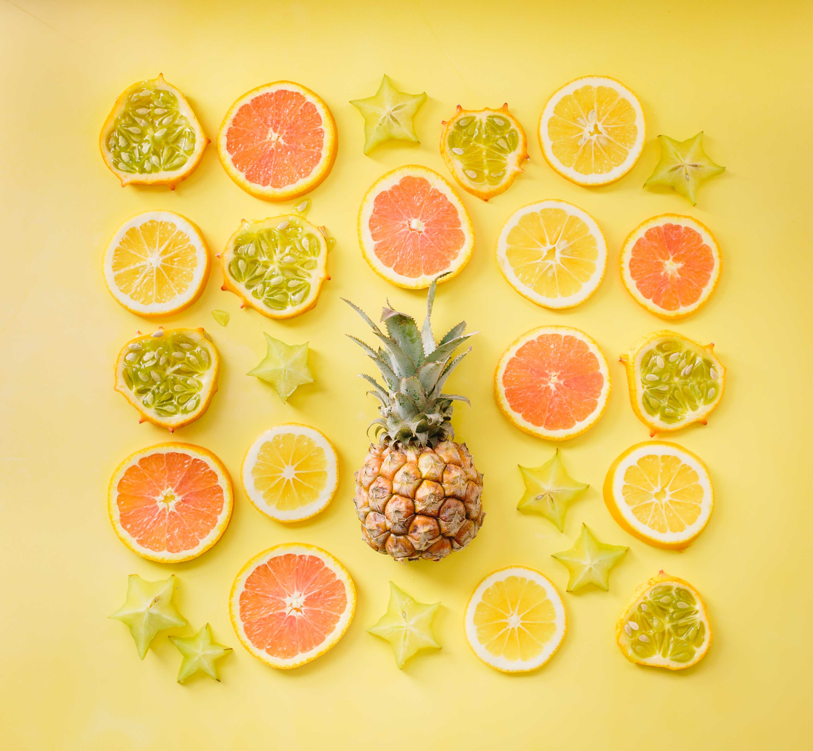
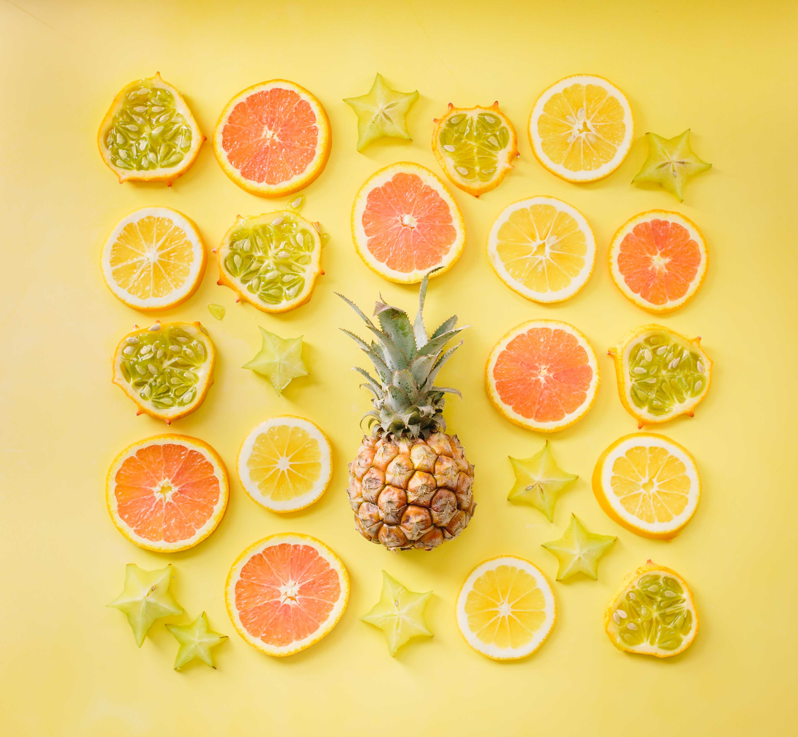

Bagaimana menerapkan adab keseharian dan bersosialisasi ala Rasulullah, dengan mengutamakan nilai-nilai keislaman untuk hidup yang lebih tentram
Menerapkan jual-beli dengan hukum Islam agar mendapat rejeki yang lebih berkah dan diridhai oleh Allah
Tips Hidup Sehat Ala Rasulullah
1. Mengkonsumsi Makanan Halal dan Bergizi
Tips hidup sehat ala Rasulullah SAW yang pertama ini menjadi yang utama dan wajbi untuk diikuti.
Selama hidupnya, beliau selalu mematuhi dasar hukum Islam untuk tidak memakan makanan haram.
Sebab jika Allah SWT sudah memberi larangan, sudah pasti hal itu tidak baik untuk tubuh.
Allah Ta'ala Berfirman :
"Hai orang-orang yang beriman, makanlah di antara rezeki yang baik-baik yang Kami berikan
kepadamu dan bersyukurlah kepada Allah, jika benar-benar kepada-Nya kamu menyembah," (Al-Baqarah Ayat 172).
2. Konsumsi Kurma dan Madu
Rasulullah SAW memiliki pola makan dengan mengonsumsi makanan bergizi, misalnya seperti makan kurma, madu, zaitun, dan sebagainya.
Rasulullah SAW bersabda:
“Barang siapa setiap pagi mengkonsumsi tujuh butir kurma 'Ajwa, maka pada hari itu ia akan terhindar dari racun dan sihir,” (HR Bukhari dan Muslim).
Biasanya, Rasulullah SAW mengonsumsi segelas air putih dicampur dengan madu ketika sarapan. Madu memang memiliki banyak manfaat. Salah satu manfaatnya dijelaskan dalam sebuah penelitian di BMC Complementary Medicine and Therapie.
Dalam penelitian tersebut, dijelaskan bahwa rutin mengonsumsi madu dapat terhindari dari risiko penyakit kardiovaskular, seperti hipertensi, penyakit jantung koroner, dan lainnya.
3. Menjaga Kebersihan dengan Mencuci Tangan
Gaya hidup sehat ala Rasulullah yang bisa diikuti adalah mencuci tangan. Nabi Muhammad SAW adalah seseorang yang selalu menyempurnakan wudhunya.
Beliau mencuci tangannya sampai ke sela-sela hingga bersih. Oleh karena itu tidak heran jika Nabi tidak pernah mengalami gangguan pencernaan atau sakit perut, walaupun makan dengan menggunakan tangan.
Diriwayatkan oleh Laqith bin Shabrah, katanya,
“Aku berkata: 'Wahai Rasulullah, kabarkan kepadaku tentang wudu?'”Nabi berkata: “Sempurnakan wudumu, dan sela-sela antara jari-jemarimu, dan bersungguh sungguhlah dalam
memasukkan air ke dalam hidung kecuali jika kamu dalam keadaan berpuasa,”
(HR Tirmidzi).
 
